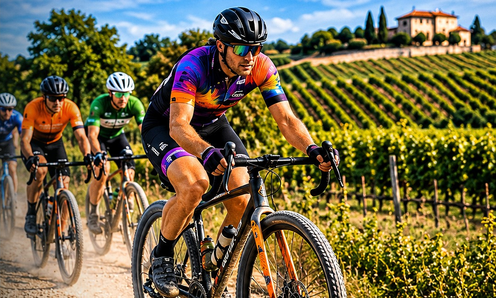

Strade bianche · Libertà · Territorio
I PERCORSI
La bellezza del gravel è nel viaggio. Le informazioni ufficiali sui tracciati sono in preparazione.

In aggiornamento
Ogni strada ha una storia.
Stiamo preparando le informazioni sui percorsi. Distanze, dislivelli, tracce GPX, ristori e indicazioni tecniche saranno pubblicati quando confermati.
Non sono ancora disponibili tracciati ufficiali. Non utilizzare itinerari non verificati come percorso dell’evento.
Richiedi aggiornamenti